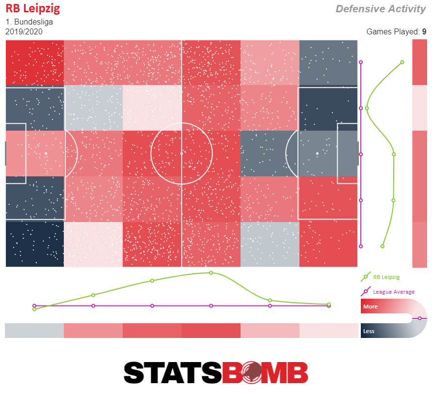
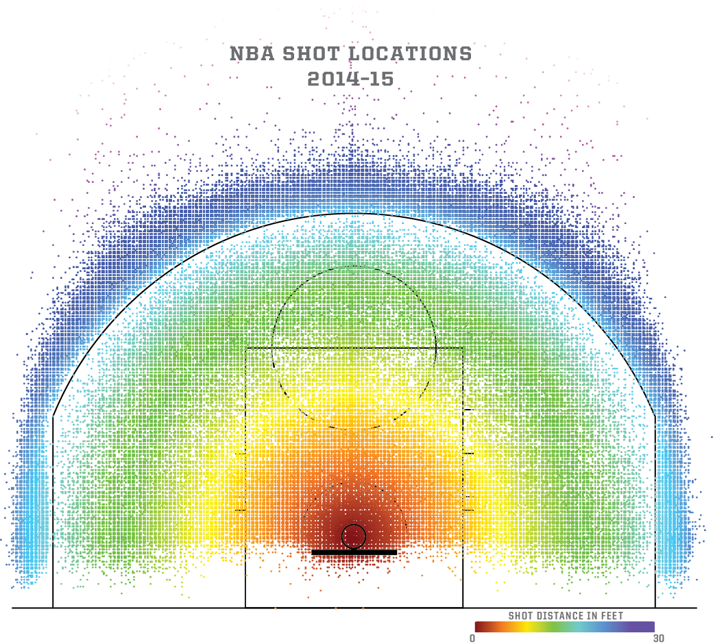
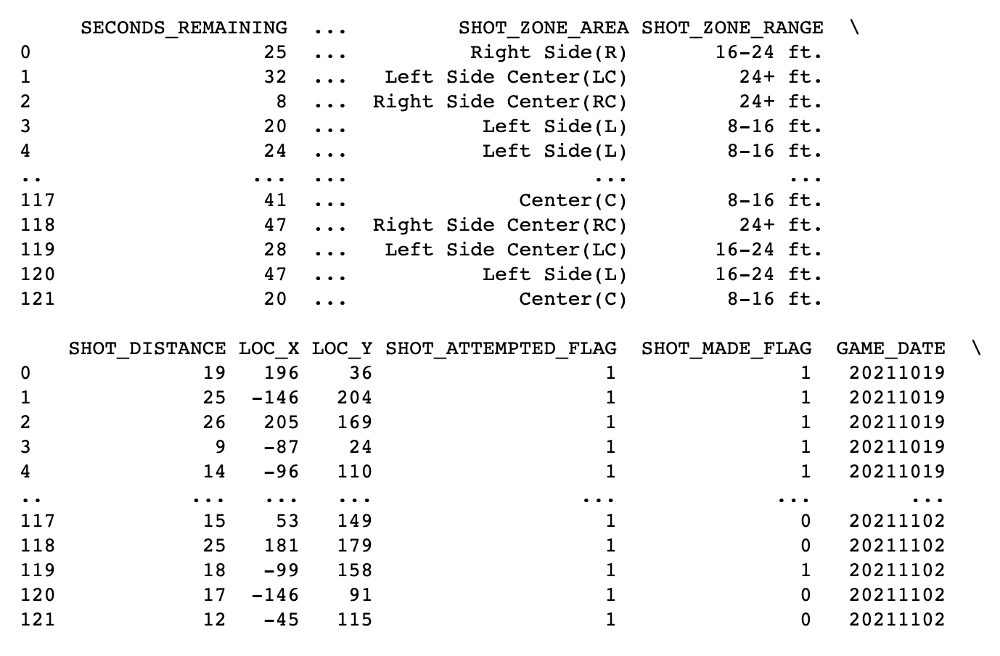

Over the past decade, modern data and analytics has revolutionized how NBA teams strategize and play basketball. Every team now has their own analytics departments and every game, cameras track precisely the movement of the ball and players on the court. Teams use this data to determine the shots with the highest expected value, leading to a dramatic rise in three-point shots in recent years. Players now wear health sensors that monitor their fatigue during practice, helping teams know when it is best to give a star player rest.
Teams have always used statistics and data to inform their decision making, however, in the past their data was basic and limited to things like shots, assists and rebounds. Now both teams and fans alike have access to highly detailed data for every game. However, increasingly detailed tracking leads to the challenge of having to sort through and analyze an ever increasing amount of data. This is where our project comes in.
We took inspiration from a few websites + visualizations that we have seen in the "wild". Foremost among these were the below images ([1], [2]).
 Teams have always used statistics and data to inform their decision making, however, in the past their data was basic and limited to things like shots, assists and rebounds. Now both teams and fans alike have access to highly detailed data for every game. However, increasingly detailed tracking leads to the challenge of having to sort through and analyze an ever increasing amount of data.
We started out with the question, "I wonder how accurate LeBron is from the right side of the court v. the left?"
As our thinking evolved, we realized we wanted to create something that would effectively display a player's shot accuracy from different parts of the basketball court.
Through this project, we tried to convey information about individual players’ shot accuracy
from specific parts on the court. We wanted to be able to differentiate between diferent types of players -
for example, Stephen Curry and Ben Simmons have extremely different shot charts (Steph takes a ton of 3 pointers
and Simmons gets a lot of points closer to the basket).
We also
We wanted to answer the following overarching questions --
We have gotten our data from the official NBA website (https://www.nba.com/stats/) which contains detailed statistics from every NBA game played dating back over twenty years. By using data supplied by the league itself, we can trust that the information is as accurate and trustworthy as possible.
We have done a good amount of data cleanup as we have encountered, in the initial phase, far more data than we actually need for the scope of this project. The data itself was relatively easy to work with and did not require much post processing -- the difficulty lay in aggregating the pertinent information and getting the API to work locally; and later, downloading the correct datasets to our server. The data we are interested in are mostly statistics from NBA games -- these have been checked many times prior to viewing them which makes any mistakes unlikely.
We used a python package called nba_api (https://pypi.org/project/nba-api/) to help us access the appropriate data for this project. This is an API client for www.nba.com that makes the API endpoints on the websites easier to access and helped make the process of data gathering more efficient. Once we had understood the scale of the data to the full extent, we then moved to integrating the call to the API directly into our javascript code. This was a slight a topic of concern, as the API proved to be quite difficult to deal with (it is an open-source tool, and there have been some problems with the code on that end). We resolved this situation by downloading data locally, with the hope that if there is a resolution on the API side, we will be ready to adapt our implementation.
We initally utilized python to inspect and understand our data. Once we were eventually able to get the data locally,
we first pulled a sample dataset into a csv to understand it better, visualizing a few graphs in Excel. Then, once we had
a good understanding of things, we wrote a python script to pull the player data into separate .jsons for greater ease of use.
Using python to pull the information into a json
proved to be the quickest and most efficient way to rapidly iterate (and download) through the hundreds of thousands of
data points that we needed to analyze (thousands of individual player shots that then needed to
be aggregated into one holistic value for the chart displays).
The main goal of this visualization was to portray a specific player’s shooting percentage in different locations on the court. We also **pending** incorporate league average (%s) of shots taken from those court locations. We have included shot data points across an entire season for any given player.
Above, you can see how our design process initially looked. We used the Five Sheet Design Methodology to instruct and inform our process.
The main display is a base image of half of a basketball court (see above images). This serves as the background
for the main visualization. The intent of this visualization is for a user to be able to quickly determine how accurate
player X is from a specific section of the basketball court.
*pending* Users hovering over different portions of court will display shot
accuracy on popup (tooltip).
(Secondary display) - A separate bar chart populates showing the selected player's accuracy as a function of distance from the hoop.
Users are able to "kickstart" the visualization by searching for players by name at the top of the page. The intent here is for a user to identify a specific player and then rapidly get the relevant information about that player. For example, a user could search for Chris Paul. The visualization will populate his average scoring accuracy + information.
Rather than being a collection of discrete points, the data was actually far more interconnected than we thought. We were able to process and sort through the information efficiently given that the API source contained a number of "zones". The below image shows a snapshot of the data, and the relevant "zone" information. See the "SHOT_ZONE_AREA" and "SHOT_ZONE_RANGE" especially.
As we went deeper into building our visualizations, we noticed that we had to combine a few of the data features to get the information we wanted (X,Y locations; shot zone areas; etc). There was no single "silver bullet"; rather we had to leverage these different features of the dataset to get to our desired outcome. For example, our shot charts eventually included discrete data points (represented as circles) as well as 'areas' of the court where the accuracy was displayed in a different popup.